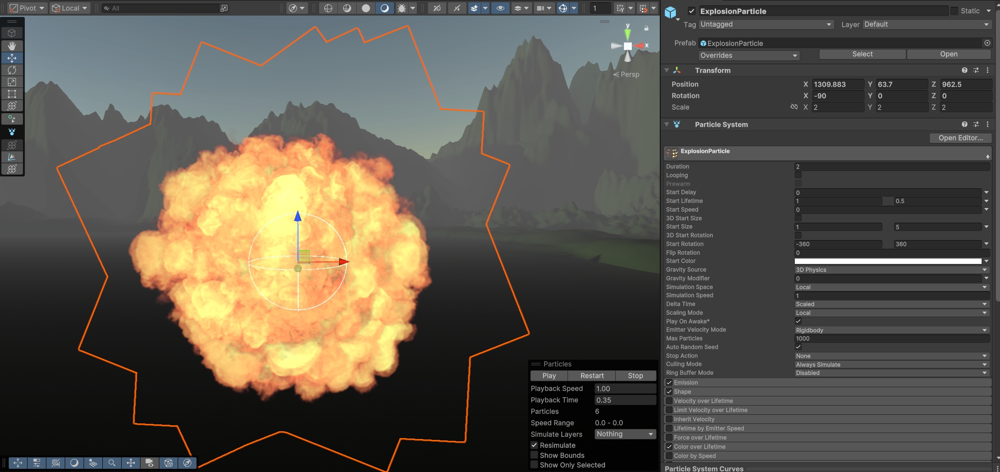
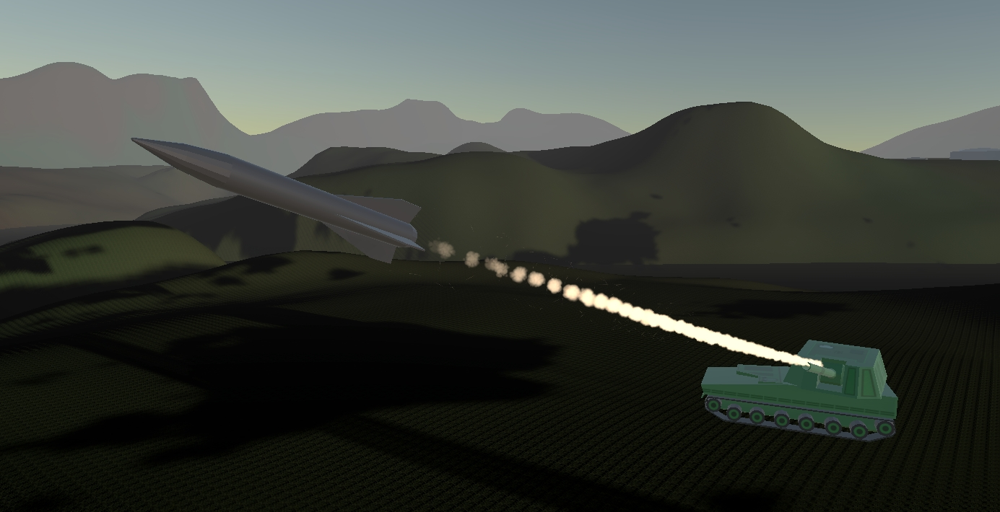

Rotor Warfare is an asymmetric, cross-platform multiplayer game that pits PC players against mobile Android users in intense, real-time tactical combat. One player commands the skies taking on the role of a heavily armed gunner, while the opposing force manages ground defense systems. It requires sharp reflexes, strategic coordination, and a solid understanding of the battlefield layout.
Building a seamless cross-platform experience required a highly optimized backend. I architected the multiplayer framework using Unity Netcode to support stable, real-time asymmetric co-op and PvP between Windows and Android devices. To prevent desync and cheating, I developed a server-authoritative mission management system alongside AI-driven 3D targeting logic for procedurally generated mission objectives.
Because Rotor Warfare needs to run smoothly on both PC and mobile devices simultaneously, environmental VFX had to be highly optimized. I built explosion systems utilizing layered particle emitters for smoke and fire. These are strictly tuned to maintain low overdraw and a minimal texture memory footprint, ensuring clear tactical feedback without bottlenecking mobile GPUs.

To help players read incoming attacks and understand combat arcs during fast-paced encounters, I implemented a highly performant dynamic trail system. These trails are cast directly from active weapon joints and are strictly bound to the active frames of the combat logic, guaranteeing that the visual effects match the underlying server hitboxes perfectly.
